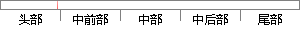

本系统所采用的Vue也是一种基于mvvm模式的前端框架。
片段位置图

相似结果|
相似片段 1：的框架 Express[20]，前端采用 MVVM 模式[21]的框架 AngularJS[22]，平台的前端布局采用 Bootstrap[23]实现，异常监控模块的数据传输基于前端跨域技术，异常数据分析模块通过数据可视化工具Highcharts来呈现异常数据分析结果。
|
※ 片段修改建议 ※
近似词参考：- 采用：采取 接纳 采纳
系统自动生成语句：本系统所采取的Vue也是一种基于mvvm模式的前端框架。
注：本片段修改建议为系统自动生成，仅供参考。